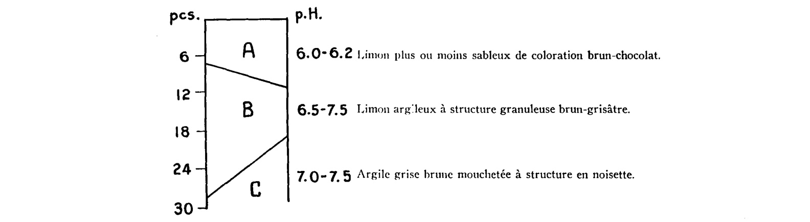

Identification & Caractéristiques Générales
La série de sols Saint-Jacques se développe sur un till morainique bas-alpin calcaire et compact, connu sous l'appellation de till de Saint-Jacques, mis en place lors de la glaciation wisconsinienne et souvent corrélé au till de Fort Covington. Ce matériau parental se compose d'une matrice à texture fine riche en limons et en argiles, renfermant une proportion variée de petits fragments lithiques inférieurs à un centimètre, principalement constitués de shale, de grès et de calcaire. Sa coloration varie du brun rougeâtre, influencée par la présence de shale argileux rouge issu du groupe géologique de Queenston vers l'est, à des teintes plus grises vers l'ouest. Morphologiquement, ces sols occupent des replats morainiques et des plaines de faible altitude, généralement sous la barre des 45 mètres dans la région métropolitaine de Montréal, présentant un modelé topographique plat à faiblement ondulé avec des pentes variant de 1 à 5 %.
Le profil pédologique présente généralement un drainage naturel modéré à imparfait, associé à une perméabilité interne restreinte par la compacité du substratum morainique qui induit la formation d'une nappe perchée temporaire lors des périodes de fonte nivale ou de fortes précipitations. La texture de surface est limoneuse à argilo-limoneuse, reposant sur un sous-sol dense et lourd. Le profil peut comporter, de manière accessoire, une pierrosité de surface ou dans le substratum, caractérisée par des cailloux dont le diamètre oscille généralement entre 7,5 et 25 cm. La réaction du sol est influencée par la nature calcaire du matériau d'origine, affichant un pH variant de légèrement acide à neutre ou légèrement alcalin selon la lixiviation des horizons supérieurs et la profondeur d'échantillonnage.
Sur le plan agronomique, les sols de la série Saint-Jacques présentent un bon potentiel pour la production de grandes cultures, telles que le maïs, le soya et les céréales, ainsi que pour les cultures fourragères, sous réserve d'une gestion adéquate de l'eau. Les principales limitations agronomiques découlent de la compacité du till et de la lenteur du ressuyage printanier, lesquelles restreignent la portabilité des machineries lourdes et exigent l'implantation d'un réseau de drainage souterrain (tuyauterie) pour optimiser la profondeur d'enracinement. La régie culturale doit également intégrer un travail du sol approprié pour briser la semelle de labour potentielle, un chaulage d'ajustement selon les exigences des cultures, ainsi que des pratiques de conservation des sols pour mitiger les risques de battance et d'érosion hydrique sur les faibles pentes.
Classification Taxonomique & Environnement Pédologique
| Ordre Pédologique | Gleysolique |
|---|---|
| Grand Groupe (SCSS) | Gleysol humique |
| Sous-Groupe Taxonomique | Gleysol humique orthique |
| Famille Pédologique | Loameuse-grossière, mixte sableux, alcalin (calcaire) |
| Mode de Dépôt Parental | Alluvion récente sur morainique |
| Classe de Drainage Naturel | Mal drainé |
| Régime Thermique & Humidité | Doux / Perhumide |
Description Morphologique du Profil Type
Description Morphologique du Solum
Aucune coupe pédologique chiffrée avec nomenclature détaillée des horizons n'a été publiée sous forme de tableau dans les mémoires originaux pour cette unité. Les rapports d'inventaire la définissent par son matériau d'origine (Alluvion récente sur morainique), sa texture dominante (Loam à loam limoneux) et sa classe de drainage naturel (Mal drainé).
Profils Photographiques & Planches de Terrain
Documents iconographiques, figures pédologiques et coupes de terrain documentées dans les mémoires d'inventaire pour de la série Saint-Jacques :


Propriétés Physico-Chimiques & Analyses de Laboratoire
| Horizon | Prof. (pces) | pH | C org. % | N % | C/N | Sable grossier % | Sable fin % | Sable tot. % | Limon % | Argile % | Ca éch. | Mg éch. | K éch. | Na éch. | Bases tot. | C.E.C. | Saturation % |
|---|---|---|---|---|---|---|---|---|---|---|---|---|---|---|---|---|---|
| Couchede surface | Moyenne | 1,8 | 2,7 | 4,9 | 9,1 | 19,7 | 61,2 | 19,1 | 7,1 | 2,23 | 16,6 | 1,24 | 0,21 | 0,08 | 19,71 | 96,1 | 3 |
| Inférieure | 1,1 | 2,0 | 3,6 | 7,6 | 16,1 | 57,4 | 16,0 | 6,7 | 1,81 | 12,4 | 0,92 | 0,18 | 0,07 | 17,11 | 62,2 | ||
| Supérieure | 2,5 | 3,4 | 6,1 | 10,6 | 23,2 | 65,1 | 22,3 | 7,4 | 2,70 | 22,1 | 1,61 | 0,24 | 0,10 | 22,69 | 148,2 | ||
| CV | 49,3 | 32,4 | 31,3 | 19,7 | 21,8 | 7,6 | 19,9 | 5,8 | 14,2 | 11,5 | 23,0 | 15,4 | 13,9 | 5,4 | 11,4 | ||
| Classe de contenu** | M | E | F | F | F | M | M | ||||||||||
| Couchede surface | N | 1 | 1 | 1 | 1 | 1 | 1 | 1 | 1 | 1 | 1 | 1 | 1 | 1 | 1 | 1 | 3h |
| Moyenne | 2,0 | 2,8 | 4,4 | 7,5 | 18,7 | 55,6 | 25,6 | 6,8 | 4,34 | 23,5 | 1,60 | 0,14 | 0,11 | 28,39 | 75,6 | ||
| Inférieure | - | - | - | - | - | - | - | - | - | - | - | - | - | - | - | ||
| Supérieure | - | - | - | - | - | - | - | - | - | - | - | - | - | - | - | ||
| CV | - | - | - | - | - | - | - | - | - | - | - | - | - | - | - | ||
| Classe de contenu** | |||||||||||||||||
| Sous-sol | N | 8 | 8 | 8 | 8 | 8 | 8 | 8 | 8 | 2 | 8 | 8 | 8 | 8 | 8 | 8 | |
| Moyenne | 1,4 | 3,4 | 7,5 | 15,5 | 28,6 | 60,7 | 10,7 | 7,3 | 0,19 | 6,7 | 0,90 | 0,10 | 0,08 | 8,13 | 135,2 | ||
| Inférieure | 0,6 | 0,8 | 2,4 | 10,8 | 17,2 | 49,9 | 7,7 | 6,8 | 0,00 | 4,9 | 0,53 | 0,08 | 0,05 | 7,08 | 102,3 | ||
| Supérieure | 2,3 | 6,1 | 12,5 | 20,2 | 40,0 | 71,6 | 13,7 | 7,9 | 0,44 | 9,2 | 1,35 | 0,13 | 0,11 | 9,32 | 178,7 | ||
| CV | 86,9 | 116 | 101 | 45,0 | 59,5 | 26,7 | 42,4 | 11,2 | 23,3 | 19,9 | 49,7 | 37,8 | 57,9 | 8,3 | 8,4 | ||
| Substratum | N | 6 | 6 | 6 | 6 | 6 | 6 | 6 | 6 | 1 | 6 | 6 | 6 | 6 | 6 | 6 | |
| Moyenne | 3,3 | 5,0 | 8,7 | 15,7 | 35,1 | 52,8 | 12,1 | 8,3 | 0,12 | 19,0 | 1,05 | 0,13 | 0,08 | 6,69 | 4,0 | ||
| Inférieure | 1,8 | 2,4 | 4,5 | 11,2 | 28,5 | 40,8 | 4,5 | 8,1 | - | 18,1 | 0,61 | 0,08 | 0,06 | 5,18 | 0,9 | ||
| Supérieure | 4,7 | 7,5 | 13,0 | 20,2 | 41,7 | 64,9 | 19,6 | 8,4 | - | 20,0 | 1,62 | 0,18 | 0,11 | 8,57 | 12,3 | ||
| CV | 52,8 | 62,4 | 59,4 | 35,1 | 22,8 | 27,8 | 75,9 | 1,5 | - | 1,9 | 40,9 | 43,0 | 36,2 | 13,0 | 74,5 |
Particularités Régionales, Phases & Variantes Pédologiques
Déclinaisons régionales, faciès texturaux, phases d'érosion ou de pierrosité et variantes cartographiées par étude pour de la série Saint-Jacques :
| Étude Régionale | Symbole | Appellation / Phase / Variante | Différenciation avec la série type (Analyse pédologique) |
|---|---|---|---|
| Comté de Iberville | JA |
Saint-Jacques loameux grossier sur till loameux | Modalité modale de référence (type de base de la série). |
JAi |
Saint-Jacques loameux grossier sur till loameux phase inondée | Phase peu profonde sur till. | |
JAp |
Saint-Jacques loameux grossier sur till loameux légèrement à modérement pierreux | Phase pierreuse (abondance de cailloux et blocs en surface); Phase peu profonde sur till. | |
| Comté de Laprairie | JA3 |
Saint-Jacques loam limoneux | Faciès plus limoneux (loam limoneux), offrant une forte rétention en eau mais vulnérable à la battance. |
JA3h |
Saint-Jacques loam limoneux humifère | Phase humifère enrichie en matière organique superficielle; Faciès plus limoneux (loam limoneux), offrant une forte rétention en eau mais vulnérable à la battance. | |
| Comté de Napierville | JA |
Saint-Jacques | Conforme à la série type de référence (caractéristiques texturales et drainage identiques). |
JAT |
Saint-Jacques tourbeux | Phase tourbeuse en surface (accumulation de matière organique fibrique ou mésique mal décomposée). | |
JAh |
Saint-Jacques humifère | Phase humifère enrichie en matière organique superficielle. | |
| Comté de Saint-jean | JA |
Saint-Jacques loam limoneux | Faciès plus limoneux (loam limoneux), offrant une forte rétention en eau mais vulnérable à la battance. |
JAp |
Saint-Jacques loam limoneux légèrement à modérément pierreux | Phase légèrement à modérément pierreuse (obstruction mécanique modérée); Faciès plus limoneux (loam limoneux), offrant une forte rétention en eau mais vulnérable à la battance. | |
| Comté de St-jean | SJA |
SAINT-JACQUES (JA) | Conforme à la série type de référence (caractéristiques texturales et drainage identiques). |
Distribution Pédo-Paysagère & Représentativité Cartographique (Couverture PPS 2026)
- Botreaux sable limoneux à loam sableux (BUX) — co-occurrente dans 24 polygone(s)
- Chicot loam sableux fin (CHC) — co-occurrente dans 13 polygone(s)
- Boucherville loam (BCL) — co-occurrente dans 13 polygone(s)
Aptitudes Agronomiques, Hydropédologie & Conservation des Sols
Indicateurs Hydropédologiques & Vulnérabilité à l'Érosion (BDHP 2026)
Interprétation BDHP : Potentiel de ruissellement modérément faible. Infiltration modérée avec textures moyennes à modérément grossières.
Classement selon l'Inventaire des Terres du Canada (ITC / CLI) : Classe 2w.
- Potentiel agricole : Terroir adapté aux cultures régionales selon la texture dominante et la régie de drainage.
- Contraintes majeures : Mal drainé. Risque d'engorgement temporaire ou d'excès d'eau printanier.
- Gestion & Aménagement : Drainage souterrain ou superficiel préconisé sur les terres planes. Chaulage et apport organique régulier selon les bilans agronomiques.
- Cultures adaptées : Grandes cultures (maïs, soya, céréales), prairies fourragères et cultures maraîchères selon le contexte géomorphologique.